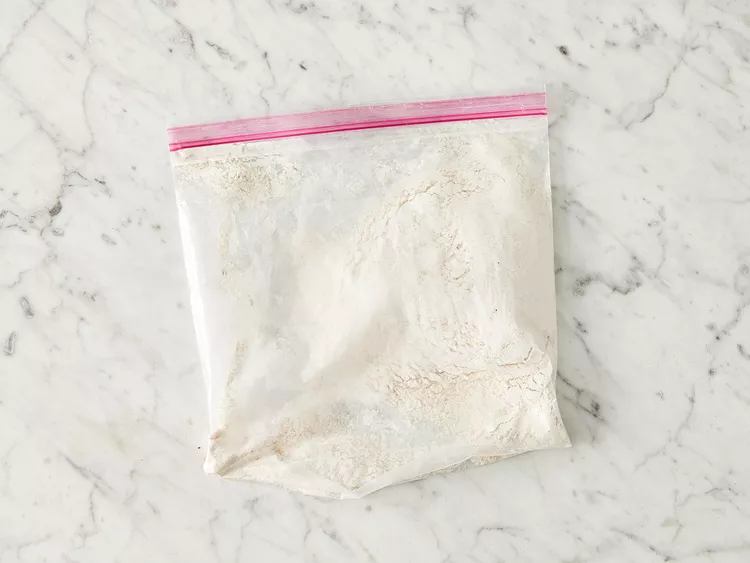
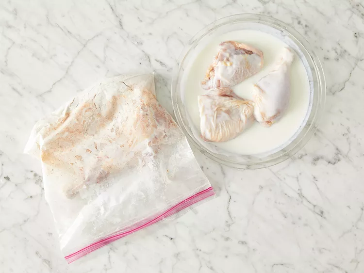
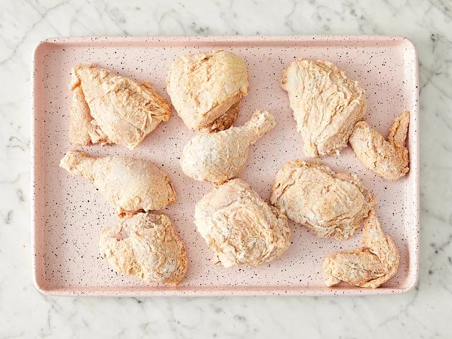
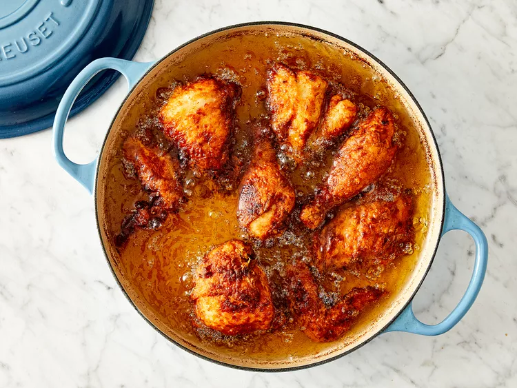

THE CRISPY FRIED CHICKEN RECIPE
Looking for some delicious and easy chicken recipes? Look no further than this page! We have a variety of recipes to choose from,
all made with simple ingredients.
Whether you're in the mood for something classic like roast chicken or something more adventurous like Thai curry chicken, we have a recipe for you. So get cooking and enjoy!
INGREDIENTS
Here's what you'll need to make the best, crispiest fried chicken of your life:
- Chicken
Cut a four-pound whole chicken into pieces or purchase four pounds of
breasts, drumsticks, wings, legs, and/or thighs at the grocery store.
- Buttermilk
Acidic buttermilk tenderizes the chicken without making it too tough.
Also, it helps the flour mixture stick to the chicken.
- Flour
All-purpose flour gives the buttermilk and seasonings something to stick to, while ensuring a wonderfully crispy crust.
- Seasonings
This crispy fried chicken recipe calls for paprika (which helps with browning), salt, and pepper.
You can add more spices and seasonings to taste.
- Oil
Vegetable oil is perfect for frying chicken because it has a high smoke point
STEPS
-
Take your cut up chicken pieces and skin them if you prefer.
-
Put the flour in a large plastic bag (let the amount of chicken you are cooking dictate the amount of flour you use). Season the flour with paprika, salt and pepper to taste (paprika helps to brown the chicken).

-
Dip chicken pieces in buttermilk then, a few at a time, put them in the bag with the flour, seal the bag and shake to coat well.

-
Place the coated chicken on a cookie sheet or tray, and cover with a clean dish towel or waxed paper. LET SIT UNTIL THE FLOUR IS OF A PASTE-LIKE CONSISTENCY. THIS IS CRUCIAL!

-
Fill a large skillet (cast iron is best) about 1/3 to 1/2 full with vegetable oil. Heat until VERY hot.
-
Put in as many chicken pieces as the skillet can hold. Brown the chicken in HOT oil on both sides.

-
When browned, reduce heat and cover skillet; let cook for 30 minutes (the chicken will be cooked through but not crispy). Remove cover, raise heat again, and continue to fry until crispy.

-
Drain the fried chicken on paper towels. Depending on how much chicken you have, you may have to fry in a few shifts. Keep the finished chicken in a slightly warm oven while preparing the rest.